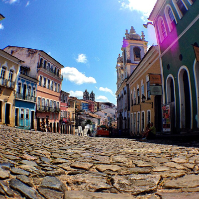
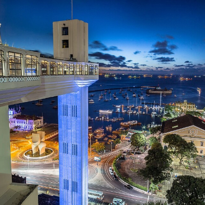
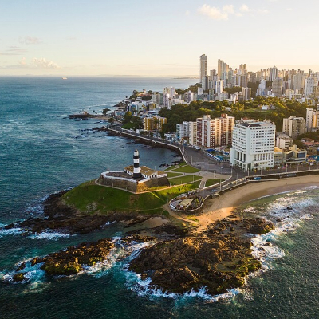

Melhores Lugares

Pelourinho
É o coração pulsante do Centro Histórico de Salvador
e um dos
maiores
ícones culturais do Brasil

Elevador Lacerda
Elevador histórico que oferece vistas panorâmicas
sobre a cidade de
Salvador.

Farol da Barra
É um ícone histórico do século XVII e
o farol mais antigo em
operação
nas Américas.